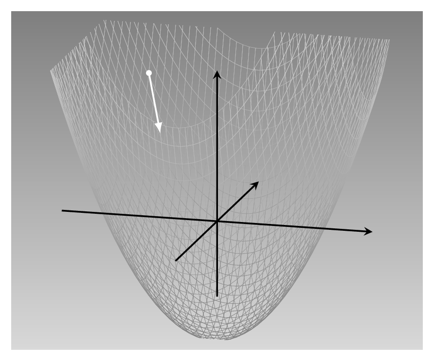
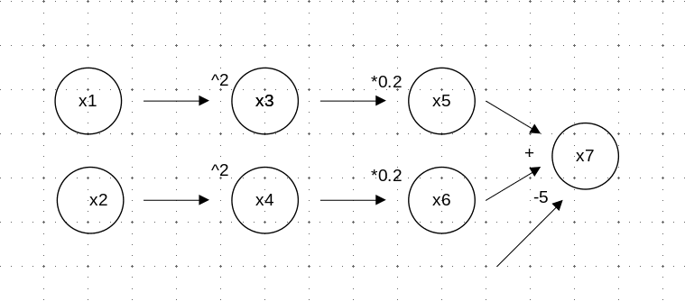

library(torch)
x1 <- torch_tensor(2, requires_grad = TRUE)
x2 <- torch_tensor(2, requires_grad = TRUE)2 自動微分
前の章では、テンソルをどのように扱うかを学び、それに対して行うことができる数学的な演算の例を示した。 そのような演算が多数あったとしても、それらが主要なtorchの全てだったら、この本は読む必要がない。 torchのようなフレームワークの人気は、それらを使ってできること、一般的には深層学習、機械学習、最適化、大規模科学計算にある。 これらの応用分野の多くは、なんらかの損失函数を最小化と関係している。 これは、さらに函数の 微分 の計算を必要とする。 ここで、利用者として、個々の微分の函数形を自分で指定しなくてはならないということを想像してみよう。 特にニューラルネットワークでは、すぐに面倒になるだろう。
実は、torchは微分の函数表現を作ったり、保存したりしない。 代わりに、 自動微分 と呼ばれるものを実装している。 自動微分では、より具体的には逆モード形では、微分はテンソル演算のグラフを逆向き走査で計算され、結合される。 この後すぐに例を示すが、その前に一歩引いてなぜ微分を計算する必要があるのか、簡単に議論しておこう。
2.1 なぜ微分を計算するのか
教師あり機械学習では、訓練集合が使えて、予測したい変数は既知である。 これが目的変数で真値である。 今予測アルゴリズムを開発し、これを入力変数、予測変数に基づいて訓練する。 この訓練あるいは学習過程は、アルゴリズムの予測と真値とを比べ、 現在の予測がどれくらいよいか悪いか捉える数値が出てくるような比較に基づいている。 この数値を与えるのは、 損失函数 の仕事だ。
一度現在の損失が分かったら、アルゴリズムはパラメタ、つまりニューラルネットワークの重みを調整して、もっとよい予測にする。 アルゴリズムはどの方向に調整するか知る必要がある。 この情報は、 勾配 つまり微分のベクトルから得られる。
例として次のような損失函数を想像してみる Figure 2.1。

これは二変数の二次函数 f(x_1, x_2) = 0.2x_1^2 + 0.2x_2^2 - 5 である。 最小値は(0,0)で、この点を求める。 白い点で示した点に立ち、風景を眺めれば、坂を速く降る方法は明確に分かる（坂を下るのを恐れないとする）。 でも、最良の方向を計算で見つけるには、勾配を計算する。
\(x_1\)の方向を取り上げる。 \(x_1\)に関する函数の微分は、函数値が\(x_1\)とともにどのように変化するかを示す。 計算すると\(\partial f/ x_1 = 0.4x_1\)となる。 これは\(x_1\)が増えると損失が増えることと、それがどの程度かを示している。 でも損失を減らす必要があるので、逆方向に進む必要がある。
同じことが\(x_2\)軸に対しても成り立つ。 微分を計算すると、\(\partial f/\partial x_2 = 0.4x_2\)を得る。 再び、微分が示す向きと逆方向を選ぶ。 全体では、降下方向は \[ \begin{bmatrix} -0.4x_1\\ -0.4x_2 \end{bmatrix} \] である。
この方法は最急降下と呼ばれている。 一般的に 勾配降下 と呼ばれ、機械学習で最も基本的な最適化アルゴリズムである。 おそらく直感に反して、最も効率の良い方法ではない。 さらに別の問いがある。 出発点で計算されたこの方向は降下中にずっと最適なのか。 代わりに、定期的に方向を計算し直した方が良いのかもしれない。 このような質問は後の章で検討する。
2.2 自動微分の例
微分がなぜ必要か分かったところで、自動微分（AD: automatic differentiation）がどのように計算しているか見てみよう。

Figure 2.2 は上の函数が計算グラフにどのように表すことができるかを示している。 x1とx2は入力ノードで、対応する函数のパラメタは\(x_1\)と\(x_2\)である。 xuは函数の出力で、他は全て中間ノードであり正しい順序で実行するために必要である （定数-5、0.2及び2をノードとすることもできるが、定数なので特に気にせずに、簡潔なグラフを選んだ）。
逆モードADは、torchが実装している自動微分の一種で、まず函数の出力を計算する。 これはグラフの順方向伝播である。 次に逆伝播を行い、両方の入力x1とx2に関する出力の勾配を計算する。 この過程で、右から情報が利用可能となり、積み重なっていく。
x7で、x5とx6に関する偏微分を計算する。 つまり、微分する式は \(f(x_5, x_6) = x_5 + x_6 - 5\) なので、偏微分は両方とも1である。x5から左に動き、x3にどのように依存しているか確認すると、 \(\partial x_5/ \partial x_3 = 0.2\)である。 微積分の連鎖律を用いると、出力がどのようにx3に依存するか分かるので、\(\partial f/\partial x_3 = 0.2 \times 1 = 0.2\)と計算できる。x_3から、xに最後の段階を踏む。 \(\partial x_3/ \partial x_1 = 2x_1\)なので、連鎖律を再度用いて函数が最初の入力にどのように依存するか定式化できる。 つまり \(\partial f/\partial x_1 = 2x_1 \times 0.2 \times 0.1 = 0.4x_1\) となる。- 同様に二番目の偏微分も計算し、勾配を求める。\(\nabla f = (\partial f/\partial x_1, \partial f/\partial x_2)^\mathrm{T} = (0.4x_1, 0.4x_2)^\mathrm{T}\)
これが原理である。 実際には、フレームワークによって逆モード自動微分の実装は異なる。 次の節でtorchがどのように実装しているか簡潔に示す。
2.3 torch autograd による自動微分
まず、用語について注意しておく。 torchではADエンジンは autograd と呼ばれ、本書の残りの多くの部分でもそのように記す。 それでは説明に戻る。
上述の計算グラフをtorchで構築するには、入力テンソルx1とx2を作成する。 これは興味のあるバラメタを模している。 これまでしてきたように「いつも通り」テンソルを作成すると、torchはAD向けの準備をしない。 そうせずに、これらのテンソルを作るときにrequires_grad = TRUEを渡す必要がある。
（ところで二つのテンソルに2という値を選んだのは完全に任意である。）
次に「隠れた」ノードx3とx6を作るには、二乗して掛け算をする。 最後にx7に最終出力を格納する。
x3 <- x1$square()
x5 <- x3 * 0.2
x4 <- x2$square()
x6 <- x4 * 0.2
x7 <- x5 + x6 - 5
x7torch_tensor
-3.4000
[ CPUFloatType{1} ][ grad_fn = <SubBackward1> ]requires_grad = TRUEを追加しなければならなかったのは、入力テンソルを作るときだけであることに注目してほしい。 グラフの依存するノードは全てこの属性を継承する。 確認してみよう。
x7$requires_grad[1] TRUEこれまでに自動微分が動作するために必要な前提が全て満たされた。 あとはbackward()を呼べぱ、x7が’x1とx2`にどのように依存するかが決まる。
x7$backward()この呼び出しにより、x1とx2の$gradフィールドが埋まる。
x1$gradtorch_tensor
0.8000
[ CPUFloatType{1} ]x2$gradtorch_tensor
0.8000
[ CPUFloatType{1} ]これらは、それぞれx7のx1とx2に関する偏微分である。 上記の手計算を確認すると、どちらも0.8つまり0.4にテンソル値2及び2をかけたものになっている。
すでに述べた、端から端の微分を積み上げるのに必要な積算過程はどうなっているのか。 積み上げられるに従って端から端までの微分を「追跡」することはできるのだろうか。 例えば、最終出力がどのようにx3に依存しているか見ることはできるだろうか。
x3$gradtorch_tensor
[ Tensor (undefined) ]このフィールドは埋まっていないようである。 実は、これらを計算することは必要だが、torchは不要になったら中間集計を捨て、メモリを節約する。 しかしながら、保存するretarin_grad = TRUEを渡して保存を指示することも可能だ。
x3 <- x1$square()
x3$retain_grad()
x5 <- x3 * 0.2
x5$retain_grad()
x4 <- x2$square()
x4$retain_grad()
x6 <- x4 * 0.2
x6$retain_grad()
x7 <- x5 + x6 - 5
x7$backward()それでは、x3のgradフィールドが埋まっているか確認してみよう。
x3$gradtorch_tensor
0.2000
[ CPUFloatType{1} ]x4、x5、x6についても同様だ。
x4$gradtorch_tensor
0.2000
[ CPUFloatType{1} ]x5$gradtorch_tensor
1
[ CPUFloatType{1} ]x6$gradtorch_tensor
1
[ CPUFloatType{1} ]もう一つ気になることがある。 勾配の蓄積過程を「実行中の勾配」の観点から理解したが、蓄積を進めるのに必要な個々の微分はどのように計算されるのか。 例えばx3$gradが示しているのは出力が中間状態x3にどのように依存しているかであるが、ここから実際の入力ノードであるx1にどのように到達するのか。
この面についても、確認できる。 順伝播でtorchはすべきことを書き残しておいて、後で個々の微分を計算する。 この「レシピ」はテンソルのgrad_fnフィールドに格納される。 これがx3に対してx1への「失われたつながり」を追加する。
x3$grad_fnPowBackward0x4、x5、x6についても同様。
x4$grad_fnPowBackward0x5$grad_fnMulBackward1x6$grad_fnMulBackward1これでおしまい。 この節では、torchがどのように微分を計算するかを見た上で、それをどのように行っているかの概要を示した。 ここで、自動微分を応用した最初の二つの課題に取り組む準備が整った。